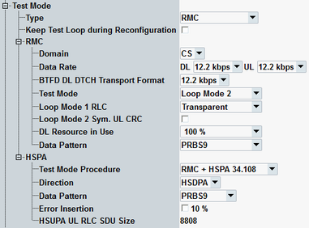

The parameters in this section configure an RMC and/or HSPA test mode connection. The settings take effect when a test mode connection is established.
For HSPA option R&S CMW-KS401 is required.
For background information, refer to "Reference Measurement Channel (RMC)" and "High Speed Packet Access (HSPA)".

Selects the test mode connection type.
Option R&S CMW-KS401 is required for HSPA, RMC + HSPA, BTFD.
- RMC: RMC in CS or PS domain
- HSPA: HSDPA or HSDPA+HSUPA in PS domain, no CS connection
- RMC + HSPA: RMC in CS or PS domain, HSDPA or HSDPA+HSUPA in PS domain
- Cell FACH 34.108: Test defined in 3GPP TS 34.108 and 34.121 using CELL_FACH state (replaces SRB type CELL_FACH, see "Type"). The signaling connection uses CELL_FACH state without the allocation of dedicated traffic channel.
The feature "Cell FACH 34.108" is not available in the reduced signaling. - BTFD: RMC for blind transport format detection, see "Blind Transport Format Detection (BTFD)". The parameter "BTFD DL DTCH Transport Format" sets the used bit rate.
Specifies whether the test loop is kept closed when the operating band or the carrier frequency is reconfigured for an established test mode connection with test loop.
By default, the loop is opened before reconfiguration and closed again after reconfiguration. If the UE supports keeping the loop closed during reconfiguration, you can speed up the procedure by enabling this parameter.
Remote command:The following parameters configure an RMC test mode connection. (For background information, see "Reference Measurement Channel (RMC)".)
Specifies the CS or PS domain for RMC connections in test mode.
Remote command:Information bit rate of the downlink and uplink reference channel in kbps.
If BTFD is selected (option R&S CMW-KS410 required), the DL bit rate is selected by the parameter "BTFD DL DTCH Transport Format".
Option R&S CMW-KS410 required.
Remote command:Selects the downlink bit rate for BTFD RMCs. The bit rate is not signaled to the UE during BTFD tests.
Option R&S CMW-KS410 required.
Remote command:Selects the test mode (loop mode) that the UE enters after connecting to the UTRAN. The test modes are defined in 3GPP TS 34.109.
When the R&S CMW sets up an RMC connection it forces the UE to the UE radio bearer test mode. The connection is fast (without alerting) and must be initiated by the instrument. Three different test modes are available: "No Loop", "Loop Mode 1 RLC" and "Loop Mode 2".
In reduced signaling mode, only loop mode 2 is supported. The loop must be activated at the UE and this parameter is hidden.
Remote command:Selects RLC transparent mode or acknowledged mode for RMC transmission with loop mode 1.
With acknowledged mode, it is possible to perform RLC throughput measurements.
In reduced signaling mode, only loop mode 2 is supported and this parameter is hidden.
Remote command:Enables or disables the uplink cyclic redundancy check (CRC) for loop mode 2. This setting is only relevant when an RMC with symmetric DL/UL data rate is used.
If the uplink CRC is enabled, the UE sends a 16-bit CRC sequence, the DL/UL transport block size is symmetric.
If the uplink CRC is disabled, the UE sends no CRC sequence, but adds the DL CRC to the transport block. The DL/UL transport block size is asymmetric.
For RMCs with asymmetric DL/UL data rate, the setting is ignored. In that case, the UL CRC is enabled and the DL/UL transport block size is asymmetric.
The setting is individual for normal signaling and reduce signaling mode. First enable or disable reduced signaling mode (see "Cell Setup") and afterwards configure the parameter "Loop Mode 2 Sym. UL CRC".
Remote command:Percentage of DL RMC transport blocks that are filled with information bits. The percentages are rounded and correspond to values 1, 1/2, 1/4, 1/6, …, 1/30, 1/32. A value 1/n means that out of n transport blocks, only one is fully filled with data. It means that (n – 1) blocks are empty. The effective data rate decreases by the factor n.
Restricting the DL resources can be necessary to prevent a buffer overflow in the UE. Especially it is useful in cases where BLER tests are performed with asymmetric RMCs (for example, 384 kbps DL and 12.2 kbps UL).
Note that the uplink DPDCH is only active (and filled with data) as long as the UE transmits data. In closed test loop mode, it implies that the UL power decreases if the percentage of DL resources in use is reduced.
Option R&S CMW-KS410 is required.
Remote command:Bit pattern transmitted as user information on the DTCH: Bit sequence consisting of zeros (All 0), ones (All 1), 010101... (Alternating), or pseudo-random bit sequences of variable length (PRBS9, PRBS11, PRBS13, PRBS15).
Remote command:The following parameters configure an HSPA test mode connection. (For background information, see "High Speed Packet Access (HSPA)".)
Option R&S CMW-KS401 is required.
Selects the connection setup method to be used for "RMC + HSPA" test mode connections.
Option R&S CMW-KS401 is required.
- RMC + HSPA 34.108: When you set up the test mode connection, both the RMC connection and the HSPA connection are set up.
- RMC + HSPA (opt): When you set up the test mode connection, only the RMC connection is set up. You can trigger an HSPA connection setup manually later on if desired (opt = optional).
Thus you can, for example, test an RMC connection separately and then add an HSPA connection for additional tests, without releasing the RMC connection in between.
This value is not available in reduced signaling mode.
You can enable HSPA in downlink direction only (value HSDPA) or in downlink and uplink direction (value HSPA).
Option R&S CMW-KS401 is required.
Remote command:Selects the bit pattern to be transmitted as user information on the HS-DSCH. The pattern consists of zeros (All 0), ones (All 1), 010101... (Alternating), or pseudo-random bit sequences of variable length (PRBS9, PRBS11, PRBS13, PRBS15).
Option R&S CMW-KS401 is required.
Remote command:Configures the rate of HS-DSCH data to be sent with an incorrect CRC value, so that the failed UE CRC check causes an NACK in the UL.
Together with the HSDPA ACK measurement, this function can be used for a first plausibility check whether the UE operates correctly.
Note that the error insertion is only relevant for test mode connections and does not apply to the packet data end-to-end connections.
Option R&S CMW-KS401 is required.
Remote command:The value of 72 bits is requested for DC-HSUPA tests (3GPP TS 34.121, section C.11A.3). Beside it, the HSUPA UL RLC SDU size is an integer multiple of the HSDPA DL RLC SDU size of 2936 bit. The reason is to ensure a sufficient data rate in the uplink. With an UL SDU size of n times 2936 bit, the UE can transmit n copies of each received SDU in the uplink. The default value of 8808 bit (n = 3) is sufficient for an uplink user data rate of 2 Mbps, which is the maximum allowed throughput for a 10 ms TTI.
Option R&S CMW-KS401 is required.
Remote command: